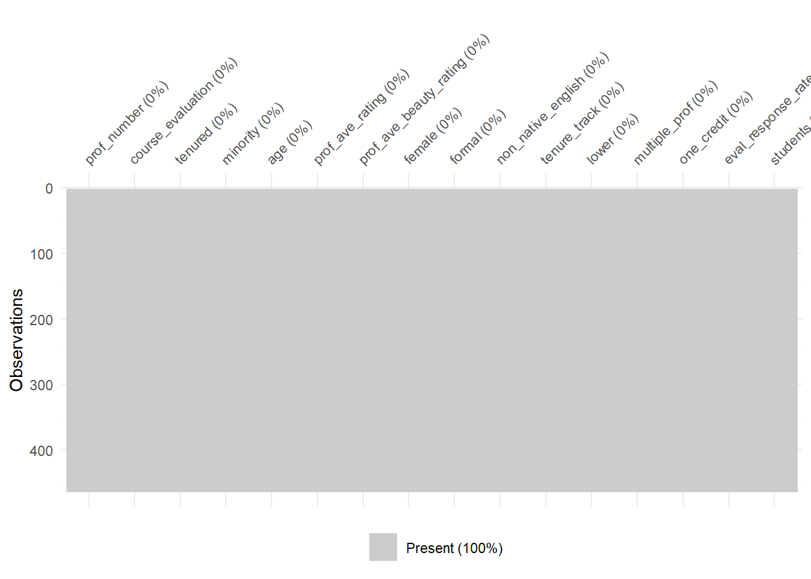
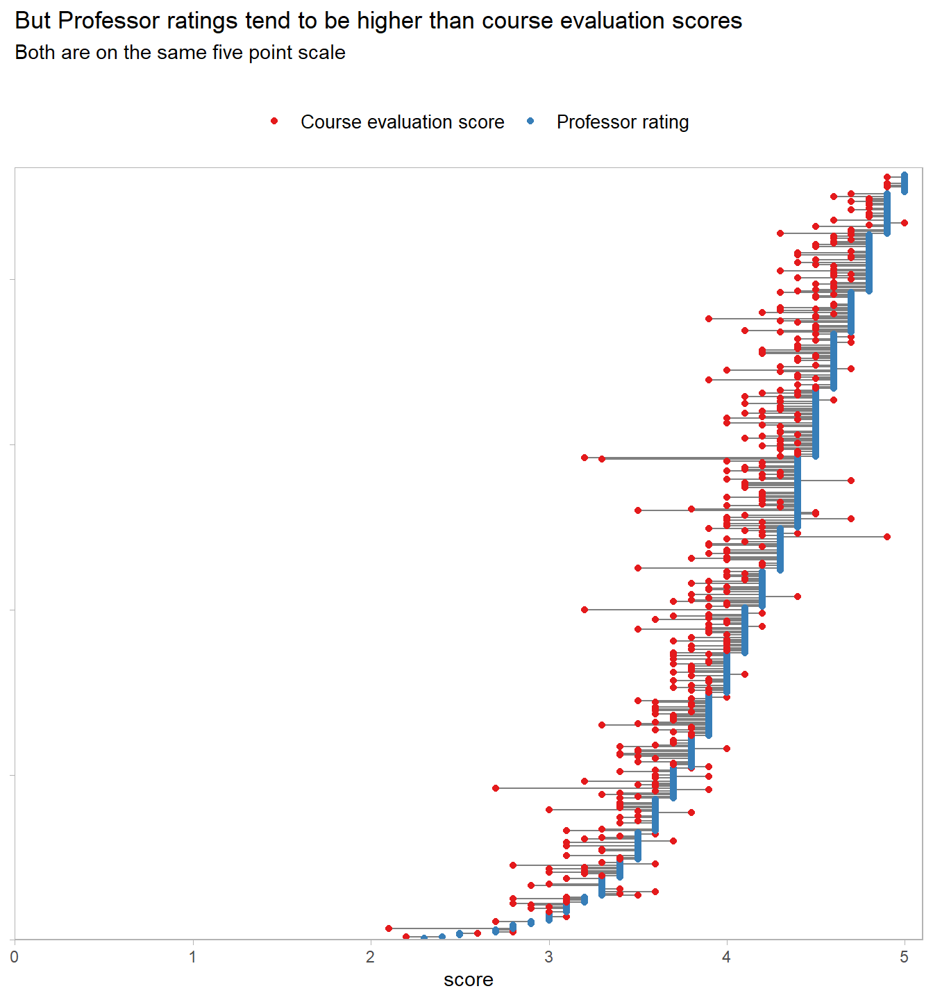
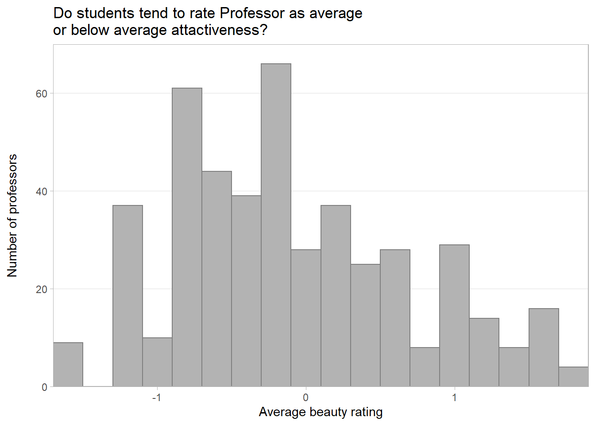
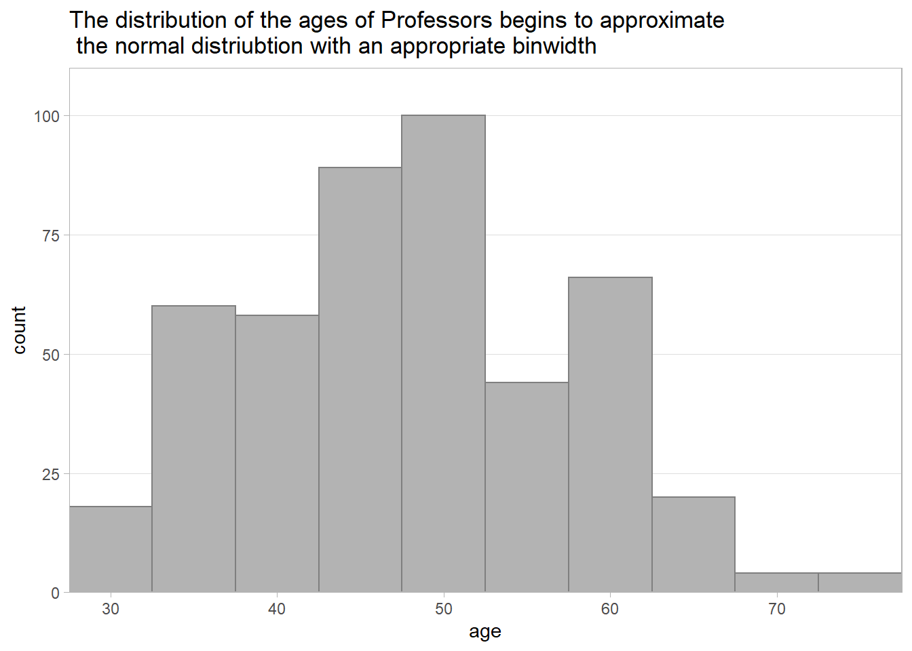

Chapter 4 Predicting course evaluation scores
# import packages used in this notebook
suppressPackageStartupMessages({
suppressWarnings({
# core libraries
library(tidyverse)
library(tidymodels)
library(rstanarm)
# helper libraries
library(janitor) # for cleaning names
library(skimr) # for summary statistic reports
library(glue) # for string formatting
library(infer) # for exploratory inference
library(patchwork) # for displaying multiple plots together
library(corrr) # for correlation analysis
library(broom.mixed)# for tidying stan objects
})
})# global setting for notebook
theme_set(theme_light())
# import my own plotting functions for styling plots
source("plotting_functions.R")
# import my own functions for producing summary stats (which use on skimr)
source("stats_functions.R")4.1 Data importing and cleaning
4.1.1 Importing the data
The data I am using in this project is available in the github repository for the book ‘Regression and Other Stories.’ So, I can read in the csv directly from the repository.
# set url for dataset
data_url <- "https://raw.githubusercontent.com/avehtari/ROS-Examples/master/Beauty/data/ProfEvaltnsBeautyPublic.csv"
# read data from github
teaching_eval <- read_csv(data_url) %>%
janitor::clean_names() # try to clean up names
# display dataframe for initial inspection
glimpse(teaching_eval)## Rows: 463
## Columns: 64
## $ tenured <dbl> 0, 1, 1, 1, 0, 1, 0, 1, 0, 0, 0, 0, 1, 1, 0, 1, 0, 0~
## $ profnumber <dbl> 1, 2, 3, 4, 5, 6, 7, 8, 9, 10, 11, 12, 13, 14, 15, 1~
## $ minority <dbl> 1, 0, 0, 0, 0, 0, 0, 0, 0, 0, 1, 0, 0, 0, 0, 0, 0, 0~
## $ age <dbl> 36, 59, 51, 40, 31, 62, 33, 51, 33, 47, 35, 37, 42, ~
## $ beautyf2upper <dbl> 6, 2, 5, 4, 9, 5, 5, 6, 5, 6, 4, 5, 5, 5, 7, 3, 1, 6~
## $ beautyflowerdiv <dbl> 5, 4, 5, 2, 7, 6, 4, 4, 3, 5, 5, 4, 4, 3, 6, 2, 3, 3~
## $ beautyfupperdiv <dbl> 7, 4, 2, 5, 9, 6, 4, 6, 7, 7, 7, 5, 7, 3, 7, 4, 4, 5~
## $ beautym2upper <dbl> 6, 3, 3, 2, 6, 6, 4, 3, 5, 6, 7, 4, 5, 5, 4, 7, 3, 4~
## $ beautymlowerdiv <dbl> 2, 2, 2, 3, 7, 5, 4, 2, 5, 3, 2, 3, 4, 1, 5, 5, 2, 4~
## $ beautymupperdiv <dbl> 4, 3, 3, 3, 6, 5, 4, 3, 3, 6, 4, 5, 4, 7, 4, 4, 2, 4~
## $ btystdave <dbl> 0.2015666, -0.8260813, -0.6603327, -0.7663125, 1.421~
## $ btystdf2u <dbl> 0.2893519, -1.6193560, -0.1878249, -0.6650018, 1.720~
## $ btystdfl <dbl> 0.4580018, -0.0735065, 0.4580018, -1.1365230, 1.5210~
## $ btystdfu <dbl> 0.8758139, -0.5770065, -1.5455530, -0.0927330, 1.844~
## $ btystdm2u <dbl> 0.6817153, -1.1319040, -1.1319040, -1.7364440, 0.681~
## $ btystdml <dbl> -0.9000649, -0.9000649, -0.9000649, -0.3125226, 2.03~
## $ btystdmu <dbl> -0.1954181, -0.6546507, -0.6546507, -0.6546507, 0.72~
## $ class1 <dbl> 0, 0, 0, 0, 0, 0, 0, 0, 0, 0, 0, 0, 0, 0, 0, 0, 0, 0~
## $ class2 <dbl> 0, 0, 0, 1, 0, 0, 0, 0, 0, 0, 0, 0, 0, 0, 0, 0, 0, 0~
## $ class3 <dbl> 1, 0, 0, 0, 0, 0, 0, 0, 0, 0, 0, 0, 0, 0, 0, 0, 0, 0~
## $ class4 <dbl> 0, 0, 1, 0, 0, 0, 1, 0, 0, 1, 1, 0, 0, 0, 0, 0, 0, 0~
## $ class5 <dbl> 0, 0, 0, 0, 0, 0, 0, 0, 0, 0, 0, 0, 0, 0, 0, 0, 0, 0~
## $ class6 <dbl> 0, 0, 0, 0, 0, 0, 0, 0, 0, 0, 0, 0, 0, 0, 0, 0, 0, 0~
## $ class7 <dbl> 0, 0, 0, 0, 0, 0, 0, 0, 0, 0, 0, 0, 0, 0, 0, 0, 0, 0~
## $ class8 <dbl> 0, 0, 0, 0, 0, 0, 0, 0, 0, 0, 0, 0, 0, 0, 0, 0, 0, 0~
## $ class9 <dbl> 0, 0, 0, 0, 0, 0, 0, 0, 0, 0, 0, 0, 0, 0, 1, 1, 0, 0~
## $ class10 <dbl> 0, 0, 0, 0, 0, 0, 0, 0, 0, 0, 0, 0, 0, 0, 0, 0, 1, 0~
## $ class11 <dbl> 0, 0, 0, 0, 0, 0, 0, 0, 0, 0, 0, 0, 0, 0, 0, 0, 0, 0~
## $ class12 <dbl> 0, 0, 0, 0, 0, 0, 0, 0, 0, 0, 0, 0, 0, 0, 0, 0, 0, 0~
## $ class13 <dbl> 0, 0, 0, 0, 0, 0, 0, 0, 0, 0, 0, 0, 0, 0, 0, 0, 0, 0~
## $ class14 <dbl> 0, 0, 0, 0, 0, 0, 0, 0, 0, 0, 0, 0, 0, 0, 0, 0, 0, 0~
## $ class15 <dbl> 0, 0, 0, 0, 0, 0, 0, 0, 0, 0, 0, 0, 0, 0, 0, 0, 0, 0~
## $ class16 <dbl> 0, 0, 0, 0, 0, 0, 0, 0, 0, 0, 0, 0, 0, 0, 0, 0, 0, 0~
## $ class17 <dbl> 0, 0, 0, 0, 0, 0, 0, 0, 0, 0, 0, 0, 0, 0, 0, 0, 0, 0~
## $ class18 <dbl> 0, 0, 0, 0, 0, 0, 0, 0, 0, 0, 0, 0, 0, 0, 0, 0, 0, 0~
## $ class19 <dbl> 0, 0, 0, 0, 0, 0, 0, 0, 0, 0, 0, 0, 0, 0, 0, 0, 0, 0~
## $ class20 <dbl> 0, 0, 0, 0, 0, 0, 0, 0, 0, 0, 0, 0, 0, 0, 0, 0, 0, 0~
## $ class21 <dbl> 0, 0, 0, 0, 0, 0, 0, 0, 0, 0, 0, 0, 0, 0, 0, 0, 0, 0~
## $ class22 <dbl> 0, 0, 0, 0, 0, 0, 0, 0, 0, 0, 0, 0, 0, 0, 0, 0, 0, 0~
## $ class23 <dbl> 0, 0, 0, 0, 0, 0, 0, 0, 0, 0, 0, 0, 0, 0, 0, 0, 0, 0~
## $ class24 <dbl> 0, 0, 0, 0, 0, 0, 0, 0, 0, 0, 0, 0, 0, 0, 0, 0, 0, 0~
## $ class25 <dbl> 0, 0, 0, 0, 0, 0, 0, 0, 0, 0, 0, 0, 0, 0, 0, 0, 0, 0~
## $ class26 <dbl> 0, 0, 0, 0, 0, 0, 0, 0, 0, 0, 0, 0, 0, 0, 0, 0, 0, 0~
## $ class27 <dbl> 0, 0, 0, 0, 0, 0, 0, 0, 0, 0, 0, 0, 0, 0, 0, 0, 0, 0~
## $ class28 <dbl> 0, 0, 0, 0, 0, 0, 0, 0, 0, 0, 0, 0, 0, 0, 0, 0, 0, 0~
## $ class29 <dbl> 0, 0, 0, 0, 0, 0, 0, 0, 0, 0, 0, 0, 0, 0, 0, 0, 0, 0~
## $ class30 <dbl> 0, 0, 0, 0, 0, 0, 0, 0, 0, 0, 0, 0, 0, 0, 0, 0, 0, 0~
## $ courseevaluation <dbl> 4.3, 4.5, 3.7, 4.3, 4.4, 4.2, 4.0, 3.4, 4.5, 3.9, 3.~
## $ didevaluation <dbl> 24, 17, 55, 40, 42, 182, 33, 25, 48, 16, 18, 30, 28,~
## $ female <dbl> 1, 0, 0, 1, 1, 0, 1, 1, 1, 0, 0, 0, 0, 0, 1, 0, 1, 0~
## $ formal <dbl> 0, 0, 0, 0, 0, 1, 0, 0, 0, 0, 0, 0, 0, 0, 0, 0, 0, 0~
## $ fulldept <dbl> 1, 1, 1, 1, 1, 1, 1, 1, 1, 1, 1, 1, 1, 1, 1, 1, 1, 1~
## $ lower <dbl> 0, 0, 0, 0, 0, 0, 0, 0, 0, 0, 0, 0, 0, 0, 0, 0, 0, 1~
## $ multipleclass <dbl> 1, 0, 1, 1, 0, 0, 1, 0, 0, 1, 1, 0, 0, 0, 1, 1, 1, 0~
## $ nonenglish <dbl> 0, 0, 0, 0, 0, 0, 0, 0, 0, 0, 1, 0, 0, 1, 0, 0, 0, 0~
## $ onecredit <dbl> 0, 0, 0, 0, 0, 0, 0, 0, 0, 0, 0, 0, 0, 0, 0, 0, 0, 0~
## $ percentevaluating <dbl> 55.81395, 85.00000, 100.00000, 86.95652, 87.50000, 6~
## $ profevaluation <dbl> 4.7, 4.6, 4.1, 4.5, 4.8, 4.4, 4.4, 3.4, 4.8, 4.0, 3.~
## $ students <dbl> 43, 20, 55, 46, 48, 282, 41, 41, 60, 19, 25, 34, 40,~
## $ tenuretrack <dbl> 1, 1, 1, 1, 1, 1, 1, 1, 1, 0, 1, 0, 1, 1, 1, 1, 0, 0~
## $ blkandwhite <dbl> 0, 0, 0, 0, 0, 0, 0, 0, 0, 0, 0, 0, 0, 0, 0, 0, 0, 0~
## $ btystdvariance <dbl> 2.1298060, 1.3860810, 2.5374350, 1.7605770, 1.693100~
## $ btystdavepos <dbl> 0.201567, 0.000000, 0.000000, 0.000000, 1.421450, 0.~
## $ btystdaveneg <dbl> 0.000000, -0.826081, -0.660333, -0.766312, 0.000000,~Next I focused down on variables within the dataset to be used in the exploratory data analysis and modeling below. I reviewed the data code book to identify the outcome variable and promising potential predictor variables. A number of variables have been dropped in the process of focusing down the dataset , as I thought these dropped variable were unlikely to important predictors of course_evaluation scores. This was a judgment based on my experiences of working in various universities over a decade or so.
Due to the nature of the variable names in the dataset, automatically cleaning all variables names to make readable and easy to interpret was not possible. So, in the process of focusing down the dataset I renamed various variables to make them easier to remember, interpret and work with. I also reorder the variables to group them in a more logical order: an outcome variable, followed by potential predictors relating to the professor, and then potential predictors relating to the class.
# focus down on features in the dataset with a good potential to act as predictors
teaching_eval_focus <- teaching_eval %>%
select(
# select and rename outcome variable
course_evaluation = courseevaluation,
# select and rename potential predictor variables relating to the professor
tenured:age,
prof_ave_rating = profevaluation,
prof_ave_beauty_rating = btystdave,
female, formal,
non_native_english = nonenglish,
tenure_track = tenuretrack,
# select and rename potential predictor relating relating to the course
lower,
multiple_prof = multipleclass,
one_credit = onecredit,
eval_response_rate = percentevaluating,
students,
class1:class30 # dummy variables
) %>%
# Move a potential indentifer variable to the front of the dataframe
# and rename for consistency
rename(prof_number = profnumber) %>%
relocate(prof_number, .before = course_evaluation)
teaching_eval_focus ## # A tibble: 463 x 46
## prof_number course_evaluation tenured minority age prof_ave_rating
## <dbl> <dbl> <dbl> <dbl> <dbl> <dbl>
## 1 1 4.3 0 1 36 4.7
## 2 2 4.5 1 0 59 4.6
## 3 3 3.7 1 0 51 4.1
## 4 4 4.3 1 0 40 4.5
## 5 5 4.4 0 0 31 4.8
## 6 6 4.2 1 0 62 4.4
## 7 7 4 0 0 33 4.4
## 8 8 3.4 1 0 51 3.4
## 9 9 4.5 0 0 33 4.8
## 10 10 3.9 0 0 47 4
## # ... with 453 more rows, and 40 more variables: prof_ave_beauty_rating <dbl>,
## # female <dbl>, formal <dbl>, non_native_english <dbl>, tenure_track <dbl>,
## # lower <dbl>, multiple_prof <dbl>, one_credit <dbl>,
## # eval_response_rate <dbl>, students <dbl>, class1 <dbl>, class2 <dbl>,
## # class3 <dbl>, class4 <dbl>, class5 <dbl>, class6 <dbl>, class7 <dbl>,
## # class8 <dbl>, class9 <dbl>, class10 <dbl>, class11 <dbl>, class12 <dbl>,
## # class13 <dbl>, class14 <dbl>, class15 <dbl>, class16 <dbl>, class17 <dbl>,
## # class18 <dbl>, class19 <dbl>, class20 <dbl>, class21 <dbl>, class22 <dbl>,
## # class23 <dbl>, class24 <dbl>, class25 <dbl>, class26 <dbl>, class27 <dbl>,
## # class28 <dbl>, class29 <dbl>, class30 <dbl>4.1.2 Checking for missing values
Next I checked for missing data. While importing the data I notice there were 30 dummy variables used to identify the class being evaluated. I wanted to look in a bit more detail at potential missing values across the dummy variables. So, first I removed the dummy variables and looked at all the other variables. From the missing values check below it looks like this dataset has already to processed as not NAs have been identified.
visdat::vis_miss(teaching_eval_focus %>%
select(-starts_with("class")))
At first glance the there are no NAs identified for the dummy variables, for all pairs of observations of observations and dummy variables either a 1 or a 0 is recorded.
visdat::vis_miss(teaching_eval_focus %>%
select(starts_with("class")))
However, if looking at these dummy variables in more detail it is clear that a lot of data is missing. By summing the all the dummy variables for a given observation, we can see if any classes are recorded for each observation. I would expect this to be 1 where a class is recorded and 0 where a class is not recorded. Hence, in this context a 0 actually corresponds to a missing value and in the plot below we can see that for approximately two thirds of observations a class is not recorded.
# check if each evaluation has a class (1-30) associated with it
# by processing the dummy variables
dummy_var_row_sum <- teaching_eval_focus %>%
select(class1:class30) %>%
rowSums() %>%
as_tibble() %>%
rename(class_indentified = value) # not all evaluations have a class # associated with them
visdat::vis_miss(dummy_var_row_sum %>%
na_if(0))
Working with the dummy variables in the analysis and modeling below would entail dropping two thirds observations and n = 463. So, although I recognized the course identifier dummy variables as potentially important predictors of course_evaluation I dropped them from the analysis, rather than loose so many observations from the dataset.
teaching_eval_clean <- teaching_eval_focus %>%
select(-starts_with("class"))
glimpse(teaching_eval_clean)## Rows: 463
## Columns: 16
## $ prof_number <dbl> 1, 2, 3, 4, 5, 6, 7, 8, 9, 10, 11, 12, 13, 14, ~
## $ course_evaluation <dbl> 4.3, 4.5, 3.7, 4.3, 4.4, 4.2, 4.0, 3.4, 4.5, 3.~
## $ tenured <dbl> 0, 1, 1, 1, 0, 1, 0, 1, 0, 0, 0, 0, 1, 1, 0, 1,~
## $ minority <dbl> 1, 0, 0, 0, 0, 0, 0, 0, 0, 0, 1, 0, 0, 0, 0, 0,~
## $ age <dbl> 36, 59, 51, 40, 31, 62, 33, 51, 33, 47, 35, 37,~
## $ prof_ave_rating <dbl> 4.7, 4.6, 4.1, 4.5, 4.8, 4.4, 4.4, 3.4, 4.8, 4.~
## $ prof_ave_beauty_rating <dbl> 0.2015666, -0.8260813, -0.6603327, -0.7663125, ~
## $ female <dbl> 1, 0, 0, 1, 1, 0, 1, 1, 1, 0, 0, 0, 0, 0, 1, 0,~
## $ formal <dbl> 0, 0, 0, 0, 0, 1, 0, 0, 0, 0, 0, 0, 0, 0, 0, 0,~
## $ non_native_english <dbl> 0, 0, 0, 0, 0, 0, 0, 0, 0, 0, 1, 0, 0, 1, 0, 0,~
## $ tenure_track <dbl> 1, 1, 1, 1, 1, 1, 1, 1, 1, 0, 1, 0, 1, 1, 1, 1,~
## $ lower <dbl> 0, 0, 0, 0, 0, 0, 0, 0, 0, 0, 0, 0, 0, 0, 0, 0,~
## $ multiple_prof <dbl> 1, 0, 1, 1, 0, 0, 1, 0, 0, 1, 1, 0, 0, 0, 1, 1,~
## $ one_credit <dbl> 0, 0, 0, 0, 0, 0, 0, 0, 0, 0, 0, 0, 0, 0, 0, 0,~
## $ eval_response_rate <dbl> 55.81395, 85.00000, 100.00000, 86.95652, 87.500~
## $ students <dbl> 43, 20, 55, 46, 48, 282, 41, 41, 60, 19, 25, 34~4.2 Exploratory data analysis
4.2.1 The response variable
So, I started the exploratory data analysis quickly looking at summary statistics for course_evaluation, which is the response variable in this exercise. This first things I noted was that the both the mean and median course_evaluation score is 4, and the mini-histogram indicates a potential left skew of the data. So, it appears that the course_evaluation scores tend to be towards the higher end of the 5 point scale. I want to look at this in a little more detail, so moved on to plotting a full histogram.
skim_minimal(df = teaching_eval_clean, course_evaluation)Variable type: numeric
| skim_variable | n_missing | complete_rate | mean | sd | p0 | p50 | p100 | hist |
|---|---|---|---|---|---|---|---|---|
| course_evaluation | 0 | 1 | 4 | 0.55 | 2.1 | 4 | 5 | ▁▂▆▇▅ |
num_evals <- nrow(teaching_eval_clean)
num_evals_three_plus <- nrow(
teaching_eval_clean[teaching_eval_clean$course_evaluation >= 3,]
)
perc_evals_three_plus <- round((num_evals_three_plus / num_evals) * 100, 0)
anno_text <- glue::glue("{perc_evals_three_plus}% of courses have
an average evaluation
score of 3 or above")
# create plot base
p <- ggplot(data = teaching_eval_clean,
mapping = aes(x = course_evaluation)) +
# add a reference line
geom_vline(xintercept = 3, colour = "grey70", size = 1.5, linetype = "longdash") +
geom_rect(xmin = 3, xmax = 5.05, ymin = 0 , ymax = 40, fill = "grey92", alpha = 0.05) +
# add annotation
geom_label(x = 3.2, y = 35,
label = anno_text, size = 3, colour = "grey20") +
# create histogram with minimal styling
geom_minimal_hist(ylim=c(0,40),
binwidth = 0.1) +
# adjust x axis labels for readability
scale_x_continuous(breaks = seq(0,5,0.5)) +
expand_limits(x = 0) +
# adjust y axis labels for readability
scale_y_continuous(breaks = seq(0,40,10)) +
# add plot labels
labs(title = "Course evaluation scores tend to be towards\nthe top end of the five point scale\n",
x = "\nAverage course evaluation score\n(given by students)",
y = "Number of courses\n") So, it full plot there is some indication of left skew, in the form of the longer tail to the left of the plot. Also, evident is the fact there is a hard limit (of 5) on the maximum course_evaluation score, which accentuates the impression of the skew.
p
ggsave("test.svg")So, I took a quick look at course_evaluation centered around the mean. This looks like a close enough approximation to the normal distribution to me. So, ahead of modeling I don’t need to think about transforming course_evaluation scores to address the limited amount of skew evident in the plot. However, it might be worth centering the course_evaluation scores as this might help make the regression coefficients easier to interpret. But I’ll come back to that later on.
course_evaluation_mean = mean(teaching_eval_clean$course_evaluation)
p <- ggplot(data = teaching_eval_clean,
mapping = aes(x = course_evaluation - course_evaluation_mean)) +
geom_minimal_hist(ylim=c(0,40),
binwidth = 0.1)
p +
labs(title = "Centering course evaluation scores makes it\neasier to see the extent of skew\n",
x = "\nCentred average course evaluation score",
y = "Number of courses\n")
4.2.2 Potential explanatory variables
So, I moved on to looking at the potential explanatory variables within the dataset. Remembering that when I imported the data I had thought about the potential explanatory variables as belonging to two distinct groups: (1) Professor related variables; and, (2) course related variables. So, below I take at look at these two groups of variables in turn.
4.2.2.1 Professor related explanatory variables
The first thing I noticed when looking at the summary statistics for the Professor related variables was that all the variables are numeric. But that there is categorical data present which has already coded as binary variables. So, I decided to split the variables again into groups of binary variables and continuous variables, before looking at the data in more detail.
# focus on variables relating to professors
explanatory_variables_prof <- teaching_eval_clean %>%
select(prof_number, tenured:tenure_track)
# produce summary statistics
skim_minimal(explanatory_variables_prof %>%
select(-prof_number), # no need to include identifer variable
show_data_completeness = FALSE)Variable type: numeric
| skim_variable | mean | sd | p0 | p50 | p100 | hist |
|---|---|---|---|---|---|---|
| tenured | 0.55 | 0.50 | 0.00 | 1.00 | 1.00 | ▆▁▁▁▇ |
| minority | 0.14 | 0.35 | 0.00 | 0.00 | 1.00 | ▇▁▁▁▁ |
| age | 48.37 | 9.80 | 29.00 | 48.00 | 73.00 | ▅▆▇▆▁ |
| prof_ave_rating | 4.17 | 0.54 | 2.30 | 4.30 | 5.00 | ▁▁▅▇▇ |
| prof_ave_beauty_rating | -0.09 | 0.79 | -1.54 | -0.16 | 1.88 | ▃▇▇▃▂ |
| female | 0.42 | 0.49 | 0.00 | 0.00 | 1.00 | ▇▁▁▁▆ |
| formal | 0.17 | 0.37 | 0.00 | 0.00 | 1.00 | ▇▁▁▁▂ |
| non_native_english | 0.06 | 0.24 | 0.00 | 0.00 | 1.00 | ▇▁▁▁▁ |
| tenure_track | 0.78 | 0.41 | 0.00 | 1.00 | 1.00 | ▂▁▁▁▇ |
To do this I wrote a quick function to identify binary variables within the dataset.
#' Checks if a column is a binary variable
#' i.e. checks if a column only contains zeros and ones
#'
#' @param col: A column of dataframe passed by a TidyVerse function
#'
#' @return: A boolean
is_binary_var <- function(col){
# identify unique entries in column
u <- col %>%
unique()
# check if only 0s and 1s a are within the column and return as appropriate
if (identical(sort(u), c(0,1))) return(TRUE)
else return(FALSE)
}4.2.2.1.1 Continuous variables
There are only three continuous variables relating to Professors:
the average rating given by students to each Professor teaching the course (
prof_ave_rating);the average beauty rating by students to each Professor teaching the course (
prof_ave_beauty_rating);and,
age.
Immediately below are the summary statistics for each of the three variables. I then take a more detailed look at each one of these variables in turn.
# identify continous variables within the dataset
explanatory_variables_prof_cont <- explanatory_variables_prof %>%
select(where(~!is_binary_var(.)))
# show summary statistics
skim_minimal(explanatory_variables_prof_cont %>%
select(-prof_number),
show_data_completeness = FALSE)Variable type: numeric
| skim_variable | mean | sd | p0 | p50 | p100 | hist |
|---|---|---|---|---|---|---|
| age | 48.37 | 9.80 | 29.00 | 48.00 | 73.00 | ▅▆▇▆▁ |
| prof_ave_rating | 4.17 | 0.54 | 2.30 | 4.30 | 5.00 | ▁▁▅▇▇ |
| prof_ave_beauty_rating | -0.09 | 0.79 | -1.54 | -0.16 | 1.88 | ▃▇▇▃▂ |
At first glance the distribution of prof_ave_rating is very similar to the distribution of the response variable (course_evaluation) .
plot_title <- "(Similarly to course evaluation scores)\nProfessor rating tends to be towards the upper end of the five point scale\n"
ggplot(data = explanatory_variables_prof_cont,
mapping = aes(x = prof_ave_rating)) +
geom_minimal_hist(ylim = c(0,45), binwidth = 0.1) +
expand_limits(x = 0)+
labs(title = plot_title,
x = "Professor rating",
y = "Number of ratings\n")
The plot below compares course_evaluation and prof_ave_rating at each observation in the dataset. This shows that for a given course-professor pair the prof_ave_rating tends to be higher than the course_evaluation score.
p <- teaching_eval_clean %>%
# focus on the two variables to be comparted for each observation
select(course_evaluation, prof_ave_rating) %>%
arrange(prof_ave_rating) %>%
# put the data in a long format for plotting
mutate(id = 1:nrow(.), .before = course_evaluation) %>%
pivot_longer(cols = c(course_evaluation, prof_ave_rating),
names_to = "score_type", values_to = "score") %>%
# create plot base
ggplot(mapping = aes(x = score, y = id)) +
# add points for prof rating and course evaluation
# and connect each pair of points with a line
geom_line(aes(group = id), colour = "grey50") +
geom_point(aes(colour = score_type)) +
# show full x axis
expand_limits(x = 0) +
# remove gap between x axis and plot
coord_cartesian(ylim = c(0, nrow(teaching_eval_clean)+5),
xlim = c(0, 5.1),
expand = FALSE) +
# add plot labels
labs(title = "But Professor ratings tend to be higher than course evaluation scores",
subtitle = "Both are on the same five point scale\n") +
# format legend to remove clutter
scale_color_brewer(palette = "Set1",
labels = c("Course evaluation score",
"Professor rating")) +
guides(colour = guide_legend(title = NULL)) +
# adjust theme to remove clutter
remove_all_grid_lines() +
theme(axis.title.y = element_blank(),
axis.text.y = element_blank(),
axis.line.y = element_blank(),
legend.position = "top",
legend.text = element_text(size = 10))
p
ggsave("test1.svg")Professors can appear multiple times in the dataset, where they have been involved in teaching multiple courses. The prof_ave_rating is the average of the ratings given by students to the professor for an individual course. The plot below shows the prof_ave_ratings for 10 randomly selected professors. So, highlighting that as expected there is some variability in the average ratings that professors received from course to course.
# ensure the sample random sample of professors is take when notebook is rerun
set.seed(100)
explanatory_variables_prof_cont %>%
# select a random sample of professors
group_by(prof_number) %>%
nest() %>%
ungroup() %>%
slice_sample(n = 10) %>%
mutate(prof_number = factor(prof_number)) %>% # convert to factor
# to simplify plotting
unnest() %>%
# produce plot
ggplot(aes(prof_ave_rating, prof_number)) +
# jitter slightly to make overlapping points easier to see
geom_jitter(alpha = 0.5, height = 0.1) +
# adjust axis for readibility
expand_limits(x = 0)+
coord_flip() +
# add plot labels
labs(y = "Professor identification number",
x = "Course evaluation score",
title = "There is some variablility in the evaluation scores professors\n received from course to course",
subtitle = "Showing course evaulation scores for 10 randomly selected professors")
So, averaging ratings for a given professor over multiple courses might give an idea of the quality of teaching delivered in general by a given professor. I’ll call this mean of average ratings over multiple course ave_teaching_qual just to avoid confusing terminology created with the multiple levels of averaging taking place. I’ll return to this estimate of teaching quality delivered by each professor later on, as it may be a potentially useful predictor of a course_evaluation score.
prof_ave_teach_qual <- explanatory_variables_prof_cont %>%
group_by(prof_number) %>%
summarise(ave_teaching_qual = mean(prof_ave_rating))
explanatory_variables_prof_cont <- explanatory_variables_prof_cont %>%
left_join(prof_ave_teach_qual)Moving on to the next professor related continuous variable the prof_ave_beauty_rating. There is a single beauty rating for each professor. I confirmed this in the code below by confirming the standard deviation of each Professor’s prof_ave_beauty_rating is zero.
# check if the beauty of professors has been rated seperately for each course
explanatory_variables_prof_cont %>%
group_by(prof_number) %>%
summarise(beauty_rating_sd = sd(prof_ave_beauty_rating)) %>%
# I am not sure why NAs are being produced here
# I checked the dataframe manually and they look like they relate to empty rows
# at the end of the dataframe. After a quick Google I could find an obvious
# reason for these empty rows, so I decided to leave this issues for now.
distinct(beauty_rating_sd)## # A tibble: 2 x 1
## beauty_rating_sd
## <dbl>
## 1 0
## 2 NALooking at the prof_ave_beauty_ratings in the plot below, it looks like again the rating were on five point scale and have already been centered. I am going to assume zero corresponds to average beauty on a Likhert scale (very unattractive, unattractive, average attractiveness, attractive, very attractive). Then it looks like there may be some tendency for students to rate their Professors as being unattractive or around average. Remembering that the ratings plotted below are averages and assuming that students were not asked to rate attractiveness on a more granular scale, where ratings of for example -0.1 could be given. A Likhert scale seems much more likely.
ggplot(explanatory_variables_prof_cont,
aes(prof_ave_beauty_rating)) +
geom_minimal_hist(ylim = c(0,70), binwidth = 0.2) +
labs(title = "Do students tend to rate Professor as average\nor below average attactiveness?",
x = "Average beauty rating",
y = "Number of professors\n")
Finally, for the Professor related continuous variables I plot the distribution of age. There is too much too note here. Other than the shape of the histogram is rather sensitive to the width of the bins.
ggplot(explanatory_variables_prof_cont,
aes(age)) +
geom_minimal_hist(ylim = c(0,110), binwidth = 5) +
labs(title = "The distribution of the ages of Professors begins to approximate\n the normal distriubtion with an appropriate binwidth")
This made wonder if it might be helpful during the modelling to have a binned (i.e. discretised) age variable which groups professors by age.
# create discrete age variable (5 year age groups starting at age 20)
explanatory_variables_prof_cont <- explanatory_variables_prof_cont %>%
mutate(age_binned = cut_width(age, width = 5, boundary = 20))4.2.2.1.2 Discrete variables
Moving on to look at the discrete (primarily binary) Professor related variables. I start by looking at the summary statistics. There is not too much to do in terms of visualisation of these variables at this point.
For the binary variables the mean value (shown in the summary stats below) indicates the proportion of professors with the characteristic associated with the variable (e.g. The proportion of professors who are tenured is 0.546). So, we can see that binary variables differ in the extent to which they partition the professors in to groups of equal or unequal size.
# identify binary variables within the dataset
explanatory_variables_prof_discrete <- explanatory_variables_prof %>%
select(where(~is_binary_var(.))) %>%
# add back in identifer variable and reorder for readability
bind_cols(select(explanatory_variables_prof, prof_number)) %>%
relocate(prof_number, .before = tenured) %>%
# add in age group variable group
bind_cols(select(explanatory_variables_prof_cont, age_binned))
# show summary statistics
skim_minimal(explanatory_variables_prof_discrete %>%
select(-prof_number),
show_data_completeness = FALSE)Variable type: factor
| skim_variable | ordered | n_unique | top_counts |
|---|---|---|---|
| age_binned | FALSE | 10 | (45: 84, (50: 74, (55: 71, (30: 63 |
Variable type: numeric
| skim_variable | mean | sd | p0 | p50 | p100 | hist |
|---|---|---|---|---|---|---|
| tenured | 0.55 | 0.50 | 0 | 1 | 1 | ▆▁▁▁▇ |
| minority | 0.14 | 0.35 | 0 | 0 | 1 | ▇▁▁▁▁ |
| female | 0.42 | 0.49 | 0 | 0 | 1 | ▇▁▁▁▆ |
| formal | 0.17 | 0.37 | 0 | 0 | 1 | ▇▁▁▁▂ |
| non_native_english | 0.06 | 0.24 | 0 | 0 | 1 | ▇▁▁▁▁ |
| tenure_track | 0.78 | 0.41 | 0 | 1 | 1 | ▂▁▁▁▇ |
Looking at the binary variables we might expect to some interactions between. For example, I wonder if a larger proportion of professors will be tenured if they are not female, and below I do a quick bit of exploratory inference to see if I am correct.
So, H0 is that there is no difference in the proportions of female and male professor who are tenured. And, HA is that there is a difference between the proportions of female and male professor who are tenured. Below I use the infer package to test H0 (assuming a significance level of 0.05)
First, calculating the observed difference in proportions;
Then, generating the null distribution (i.e. the distribution of differences we could expect from a large number of samples collected using the same methods as the observed sample) using bootstrap resampling.
Finally, comparing the observed difference in proportion with the null distribution. We can see on the plot that H0 can be rejected and the p-value of observed difference (approx. equal to 0) confirms this. So, in the population of Professors from which the current observations were sampled from we can be 95% confident that there is a difference between the proportions of female and male professor who are
tenured. And, given the observed difference in proportions 0.27 (male - female) we would expect more male than female professors to betenured.
# calculating the observed difference in proportion of men and women
# with tenure
diff_tenured <- explanatory_variables_prof_discrete %>%
# the test requires catergorical data to be coded as a factor
mutate(tenured = factor(tenured),
female = factor(female)) %>%
specify(tenured ~ female, success = "1") %>%
calculate(stat = "diff in props")
# A postive difference indicates higher proportion of men tenured
diff_tenured## # A tibble: 1 x 1
## stat
## <dbl>
## 1 0.271# generate the null distribution
null_distn <- explanatory_variables_prof_discrete %>%
# the test requires catergorical data to be coded as a factor
mutate(tenured = factor(tenured),
female = factor(female)) %>%
specify(tenured ~ female, success = "1") %>%
hypothesize(null = "independence") %>%
generate(reps = 1000) %>%
calculate(stat = "diff in props")
# visualise distribution under null hypothesis
visualize(null_distn) +
shade_p_value(obs_stat = diff_tenured, direction = "two-sided") +
theme_light() +
remove_all_grid_lines()# confirm p-value
null_distn %>%
get_p_value(obs_stat = diff_tenured, direction = "two-sided")## # A tibble: 1 x 1
## p_value
## <dbl>
## 1 0I think I’ll leave that there in terms of exploratory inference, and just assume for that there interactions between the discrete variables and come back to that issue if and when required in the modeling process.
4.2.3 Relationships between variables
Having looked in detail at each variable in isolation, I now turn to look at the relationships between the variables.
4.2.3.1 Relationships between continuous variables
First looking at the correlation between each of the continuous variables. Reviewing the correlation matrix below, the key points I noted were:
There is no co-linearity of concern between the continuous explanatory variables. The correlation coefficent of 0.8 between
prof_ave_ratingandave_teaching_qualare to be expected given the later is calculated based on the former. This isn’t of concern as I wouldn’t expect to use both teaching related variables in the same model.Only
prof_ave_ratingandave_teaching_qualare strongly correlated with the response variable (course_evaluation). I have concerns thatprof_ave_ratingis so closely correlatedcourse_evaluation, suggesting that may be students do not delineate the quality of the professor from the quality of the course (particularly given the coarse granularity of the Likhert scales used to collect the data).
# create a dataframe of all continuous variables (including the response variable)
variables_all_cont <- explanatory_variables_prof_cont %>%
bind_cols(explanatory_variables_course_cont) %>%
bind_cols(select(teaching_eval_clean, course_evaluation)) %>%
select(-prof_number, -age_binned)
# produce correlation plot - default is Pearson
p <- GGally::ggcorr(variables_all_cont, label = TRUE) +
# note key observations
labs(title = "There are no colinearity of concern between continuous explanatory variable",
subtitle = "Unsuprisngly, teaching ratings are closely correlated with course evaluation scores",
caption = "Pairwise Pearson's correlation coefficents are shown") +
# adjust text size given plot sizes
theme(plot.title = element_text(size = 18),
plot.subtitle = element_text(size = 14),
plot.caption = element_text(size = 12),
legend.position = "none")
pggsave("test2.svg")4.2.3.2 Relationships between discrete variables and continuous variables
As a final stage of the exploratory data analysis I wanted to quickly look at the relationships between the discrete and continuous predictors. In particular, I was interested in if there might be any interactions between the some of the discrete variables and the most promising predictor (ave_teaching_qual) of course_evaluation. In the code below I construct three plots to look at this.
# combine the different types of variables in to a single dataframe
# so, I can look at interactions
interactions_plot_df <- variables_all_cont %>%
bind_cols(explanatory_variables_course_discrete,
select(explanatory_variables_prof_discrete, -prof_number)) %>%
select(course_evaluation, ave_teaching_qual, female, minority, tenure_track)
#' Plots interactions between a specified bianry variable and the
#' the most promising predictor (ave_teaching_qaul) of course_evaluation
#'
#' @param binary_var: a tidy select name for a column containing a binary variable
#'
#' @return: a ggplot object
#'
plot_interaction <- function(binary_var){
# create plot base
p <- ggplot(interactions_plot_df,
aes(ave_teaching_qual, course_evaluation,
colour = factor({{binary_var}}))
) +
# add data layers
geom_point(alpha = 0.2) +
geom_smooth(se = FALSE, method = "lm", size = 1.3) +
# customise coloring to make plot easier to interpret
scale_color_brewer(type = "qual", palette = "Set1",
labels = c("No", "Yes")) +
# so full x and y axis
expand_limits(x = 0, y = 0) +
# add plot labels
labs(x = "\nAverage teaching quality delivered by professor",
y = "Course evaluation score\n")
# remove some clutter to make plot easier to interpret
theme(panel.grid.minor = element_blank(),
legend.position = "top")
return(p)
}
# produce and label plots for the three potential interactions of interest
p_f <- plot_interaction(female) +
labs(colour = "Female professor",
x ="",
title = "Interaction between prof gender and course evaluation score?")
p_m <- plot_interaction(minority) +
labs(colour = "Professor with\nminority ethnic\nbackground",
x = "",title = "Interaction between prof background and course evaluation score?")
p_tt <- plot_interaction(tenure_track) +
labs(colour = "Professor with\ntenure track",
title = "Interaction between prof tenure track status and course evaluation score?")In each of the plots below, the dataset is partitioned based on the binary variable in question, and separate linear regression lines are plotted. So, for example, the first plot show the data partitioned into two group females and males (i.e. female = Yes and female = No).
Considering each of the binary variables in turn:
female: there is a difference in the slopes of the regression lines for the two groups, so there could be an interaction worth exploring in the model.minority: the regression lines for the two groups look pretty much the same, so there probably is not an interaction worth exploring in the model.tenure_track: there is a difference in the slopes of the regression lines for the two groups, so there could be an interaction worth exploring in the model.
# combine plots to make them easier to interpret as a group
p <- p_f / p_m / p_tt
pggsave("test4.svg")4.3 Fitting the model
Approach to developing the model
Establish a starting point
Incremental add to the model and compare using loo log score (
elpd_loo)
4.3.1 Splitting the data
# bring together all variables into a single data frame
all_variables <- select(teaching_eval_clean, course_evaluation) %>%
bind_cols(explanatory_variables_prof_cont,
select(explanatory_variables_prof_discrete,
-prof_number, - age_binned),
explanatory_variables_course_cont,
explanatory_variables_course_discrete) %>%
clean_names()
all_variables## # A tibble: 463 x 17
## course_evaluation prof_number age prof_ave_rating prof_ave_beauty_rating
## <dbl> <dbl> <dbl> <dbl> <dbl>
## 1 4.3 1 36 4.7 0.202
## 2 4.5 2 59 4.6 -0.826
## 3 3.7 3 51 4.1 -0.660
## 4 4.3 4 40 4.5 -0.766
## 5 4.4 5 31 4.8 1.42
## 6 4.2 6 62 4.4 0.500
## 7 4 7 33 4.4 -0.214
## 8 3.4 8 51 3.4 -0.347
## 9 4.5 9 33 4.8 0.0613
## 10 3.9 10 47 4 0.453
## # ... with 453 more rows, and 12 more variables: ave_teaching_qual <dbl>,
## # age_binned <fct>, tenured <dbl>, minority <dbl>, female <dbl>,
## # formal <dbl>, non_native_english <dbl>, tenure_track <dbl>,
## # eval_response_rate <dbl>, students <dbl>, lower <dbl>, multiple_prof <dbl># %>%
# rename_with(.fn = ~ str_remove(., pattern = '_\\d'))# to ensure split is reproducible
set.seed(123456)
# create train and test datasets
teaching_split <- rsample::initial_split(all_variables, prop = 0.8)
teaching_train <- rsample::training(teaching_split)
teaching_test <- rsample::testing(teaching_split)4.3.2 Minimal and maximal models
#' Provides a summary of loo cross validation metrics for stan_glm model
#'
#' @param stan_lm_mod: an object with the classes "stanreg", "glm" and "lm"
#'
#' @return: a tibble of metrics
stan_glm_metric_summary <- function(stan_lm_mod, as_kable = FALSE){
# calculate r2 metrics mod
r2 <- loo_R2(stan_lm_mod)
# calculate loo metrics
metrics <- loo(stan_lm_mod)$estimates %>%
#reformat for ease of use
data.frame() %>%
rownames_to_column(var = "Metric") %>%
# add r2 to loo metrics
add_row(Metric = "r2",
Estimate = median(r2),
SE = sd(r2))
#return results
if (as_kable == FALSE) return(metrics)
else return(knitr::kable(metrics))
}
#' Compares to two stan_glm models by loo cross validation metrics
#'
#' @param mod_1: an object with the classes "stanreg", "glm" and "lm"
#' @param mod_2: an object with the classes "stanreg", "glm" and "lm"
#'
#' @return: a tibble of metrics
stan_glm_loo_comp <- function(mod_1, mod_2, as_kable = FALSE){
# compare the two models
comp <- loo_compare(loo(mod_1), loo(mod_2))
# convert comparision output to make it easier to process
res <- comp %>%
data.frame() %>%
# reformat output for ease of interpretation
rownames_to_column(var = "Model") %>%
pivot_longer(cols = elpd_diff:se_looic,
names_to = "Metric",
values_to = "Estimate") %>%
pivot_wider(names_from = "Model",
values_from = "Estimate") %>%
# add in r2 metrics
add_row(Metric = "r2",
mod_1 = median(loo_R2(mod_1)),
mod_2 = median(loo_R2(mod_2)))
# rename columns to the names of the objects passed to the function
names(res) <- c("Metric",
deparse(substitute(mod_1)),
deparse(substitute(mod_2)))
# return results
if (as_kable == FALSE) return(res)
else return(knitr::kable(res))
}Minimal model: the most promising predictor identified in the EDA
Maximal model: all predictors, where there are multiple predictors relating to the same underlying construct (e.g. age and age_binned) only one is retained.
lm_min <- stan_glm(course_evaluation ~ ave_teaching_qual, data = teaching_train,
refresh = 0)
lm_max <- stan_glm(course_evaluation ~ .,
data = select(teaching_train,
- prof_number,
- prof_ave_rating,
- age_binned),
refresh = 0)
lm_min## stan_glm
## family: gaussian [identity]
## formula: course_evaluation ~ ave_teaching_qual
## observations: 371
## predictors: 2
## ------
## Median MAD_SD
## (Intercept) -0.1 0.2
## ave_teaching_qual 1.0 0.0
##
## Auxiliary parameter(s):
## Median MAD_SD
## sigma 0.4 0.0
##
## ------
## * For help interpreting the printed output see ?print.stanreg
## * For info on the priors used see ?prior_summary.stanreglm_max## stan_glm
## family: gaussian [identity]
## formula: course_evaluation ~ .
## observations: 371
## predictors: 14
## ------
## Median MAD_SD
## (Intercept) 0.0 0.3
## age 0.0 0.0
## prof_ave_beauty_rating 0.0 0.0
## ave_teaching_qual 0.9 0.1
## tenured 0.0 0.1
## minority 0.0 0.1
## female -0.1 0.0
## formal 0.1 0.1
## non_native_english -0.2 0.1
## tenure_track 0.0 0.1
## eval_response_rate 0.0 0.0
## students 0.0 0.0
## lower 0.0 0.0
## multiple_prof -0.1 0.0
##
## Auxiliary parameter(s):
## Median MAD_SD
## sigma 0.4 0.0
##
## ------
## * For help interpreting the printed output see ?print.stanreg
## * For info on the priors used see ?prior_summary.stanregComparing the log scores from the leave-one-out cross validation (elpd_loo) the minimal model performs slightly better. So, I’ll use the minimal model as the starting point for building a better model.
stan_glm_metric_summary(lm_min, as_kable = TRUE)| Metric | Estimate | SE |
|---|---|---|
| elpd_loo | -173.0884824 | 16.4984436 |
| p_loo | 3.1546102 | 0.5467246 |
| looic | 346.1769648 | 32.9968872 |
| r2 | 0.5398558 | 0.0377842 |
stan_glm_metric_summary(lm_max, as_kable = TRUE)| Metric | Estimate | SE |
|---|---|---|
| elpd_loo | -174.0492755 | 17.1412991 |
| p_loo | 14.9007741 | 1.4595946 |
| looic | 348.0985510 | 34.2825982 |
| r2 | 0.5376852 | 0.0390503 |
stan_glm_loo_comp(lm_min, lm_max, as_kable = TRUE)| Metric | lm_min | lm_max |
|---|---|---|
| elpd_diff | 0.0000000 | -0.9607931 |
| se_diff | 0.0000000 | 4.6783376 |
| elpd_loo | -173.0884824 | -174.0492755 |
| se_elpd_loo | 16.4984436 | 17.1412991 |
| p_loo | 3.1546102 | 14.9007741 |
| se_p_loo | 0.5467246 | 1.4595946 |
| looic | 346.1769648 | 348.0985510 |
| se_looic | 32.9968872 | 34.2825982 |
| r2 | 0.5398558 | 0.5376852 |
4.3.3 Iteration 1: Adding two continuous variables
Next I try adding two continuous variables (prof_ave_beauty_rating and eval_response_rate) as predictors. These were the two variables after ave_teaching_qual with the next highest (albeit low) levels of correlation with course_evaluation. After adding these variables the model performance is the same as the minimal model. So, I’ll keep working with the minimal model as the best performing model for now.
lm_1 <- stan_glm(course_evaluation ~
ave_teaching_qual + eval_response_rate +
prof_ave_beauty_rating,
data = teaching_train,
refresh = 0)
stan_glm_loo_comp(lm_min, lm_1, as_kable = TRUE)| Metric | lm_min | lm_1 |
|---|---|---|
| elpd_diff | 0.0000000 | -0.2398614 |
| se_diff | 0.0000000 | 2.4155078 |
| elpd_loo | -172.8486210 | -173.0884824 |
| se_elpd_loo | 16.9855842 | 16.4984436 |
| p_loo | 5.2861458 | 3.1546102 |
| se_p_loo | 0.7842139 | 0.5467246 |
| looic | 345.6972420 | 346.1769648 |
| se_looic | 33.9711684 | 32.9968872 |
| r2 | 0.5423901 | 0.5398558 |
4.3.4 Iteration 2: adding in discrete variables
Next I try adding in the three discrete variables which had non-zero coefficients in the maximal model (non_native_english + female + multiple_prof). Again this doesn’t result in any improvements to model performance as measured by the cross validation log score (elpd_loo)
lm_2 <- stan_glm(course_evaluation ~
ave_teaching_qual +
# add discrete predictors
non_native_english + female + multiple_prof,
data = teaching_train,
refresh = 0)
stan_glm_loo_comp(lm_min,lm_2, as_kable = TRUE)| Metric | lm_min | lm_2 |
|---|---|---|
| elpd_diff | 0.0000000 | -0.9209362 |
| se_diff | 0.0000000 | 2.2909954 |
| elpd_loo | -173.0884824 | -174.0094186 |
| se_elpd_loo | 16.4984436 | 16.7649547 |
| p_loo | 3.1546102 | 6.3682923 |
| se_p_loo | 0.5467246 | 0.8387327 |
| looic | 346.1769648 | 348.0188372 |
| se_looic | 32.9968872 | 33.5299094 |
| r2 | 0.5398558 | 0.5386075 |
lm_2## stan_glm
## family: gaussian [identity]
## formula: course_evaluation ~ ave_teaching_qual + non_native_english +
## female + multiple_prof
## observations: 371
## predictors: 5
## ------
## Median MAD_SD
## (Intercept) 0.1 0.2
## ave_teaching_qual 1.0 0.0
## non_native_english -0.1 0.1
## female -0.1 0.0
## multiple_prof 0.0 0.0
##
## Auxiliary parameter(s):
## Median MAD_SD
## sigma 0.4 0.0
##
## ------
## * For help interpreting the printed output see ?print.stanreg
## * For info on the priors used see ?prior_summary.stanreg4.3.5 Iteration 3: adding in interactions
Next I try adding in interaction between the discrete predictors and ave_teaching_qual. As I would assume that if they are associated with the course_evaluation scores given by students, they will also be associated with the prof_ratings given by students (which have been average to give ave_teaching_qual).
Adding in these interactions seems to make things worse, and the minimal model remains the best model to date (in terms of log score).
lm_3 <- stan_glm(course_evaluation ~
ave_teaching_qual +
non_native_english + female + multiple_prof +
# add interactions between discrete predictors and the continuous predictor
ave_teaching_qual:non_native_english + ave_teaching_qual:female +
ave_teaching_qual:multiple_prof,
data = teaching_train,
refresh = 0)
stan_glm_loo_comp(lm_min,lm_3, as_kable = TRUE)| Metric | lm_min | lm_3 |
|---|---|---|
| elpd_diff | 0.0000000 | -3.1455579 |
| se_diff | 0.0000000 | 2.4034963 |
| elpd_loo | -173.0884824 | -176.2340403 |
| se_elpd_loo | 16.4984436 | 16.6240223 |
| p_loo | 3.1546102 | 8.6670133 |
| se_p_loo | 0.5467246 | 1.0750751 |
| looic | 346.1769648 | 352.4680806 |
| se_looic | 32.9968872 | 33.2480447 |
| r2 | 0.5398558 | 0.5342003 |
lm_3## stan_glm
## family: gaussian [identity]
## formula: course_evaluation ~ ave_teaching_qual + non_native_english +
## female + multiple_prof + ave_teaching_qual:non_native_english +
## ave_teaching_qual:female + ave_teaching_qual:multiple_prof
## observations: 371
## predictors: 8
## ------
## Median MAD_SD
## (Intercept) -0.1 0.3
## ave_teaching_qual 1.0 0.1
## non_native_english 0.4 1.4
## female 0.3 0.4
## multiple_prof 0.1 0.4
## ave_teaching_qual:non_native_english -0.1 0.4
## ave_teaching_qual:female -0.1 0.1
## ave_teaching_qual:multiple_prof 0.0 0.1
##
## Auxiliary parameter(s):
## Median MAD_SD
## sigma 0.4 0.0
##
## ------
## * For help interpreting the printed output see ?print.stanreg
## * For info on the priors used see ?prior_summary.stanreg4.3.6 Iteration 4: reducing number of discrete predictors used to simplify the model
Next I tried simplifying the model by reducing the number of discrete predictors and interaction. I leave non_native_english speaker in as a predictor as in the previous model it had a non-zero coefficient (albeit with considerable uncertainty around it). However, the revised model also performs marginally worse than the minimal model.
lm_4 <- stan_glm(course_evaluation ~
ave_teaching_qual +
non_native_english +
ave_teaching_qual:non_native_english,
data = teaching_train,
refresh = 0)
stan_glm_loo_comp(lm_min,lm_4, as_kable = TRUE)| Metric | lm_min | lm_4 |
|---|---|---|
| elpd_diff | 0.0000000 | -1.1228167 |
| se_diff | 0.0000000 | 1.8001823 |
| elpd_loo | -173.0884824 | -174.2112991 |
| se_elpd_loo | 16.4984436 | 16.5730517 |
| p_loo | 3.1546102 | 5.3133395 |
| se_p_loo | 0.5467246 | 0.8779247 |
| looic | 346.1769648 | 348.4225982 |
| se_looic | 32.9968872 | 33.1461033 |
| r2 | 0.5398558 | 0.5383073 |
lm_4## stan_glm
## family: gaussian [identity]
## formula: course_evaluation ~ ave_teaching_qual + non_native_english +
## ave_teaching_qual:non_native_english
## observations: 371
## predictors: 4
## ------
## Median MAD_SD
## (Intercept) 0.0 0.2
## ave_teaching_qual 1.0 0.0
## non_native_english 0.5 1.4
## ave_teaching_qual:non_native_english -0.2 0.4
##
## Auxiliary parameter(s):
## Median MAD_SD
## sigma 0.4 0.0
##
## ------
## * For help interpreting the printed output see ?print.stanreg
## * For info on the priors used see ?prior_summary.stanreglm_5 <- stan_glm(course_evaluation ~
eval_response_rate + prof_ave_beauty_rating +
non_native_english + female + multiple_prof +
ave_teaching_qual:non_native_english + ave_teaching_qual:female +
ave_teaching_qual:multiple_prof,
data = teaching_train,
refresh = 0)
stan_glm_loo_comp(lm_min,lm_5, as_kable = TRUE)| Metric | lm_min | lm_5 |
|---|---|---|
| elpd_diff | 0.0000000 | -77.887273 |
| se_diff | 0.0000000 | 13.981130 |
| elpd_loo | -173.0884824 | -250.975755 |
| se_elpd_loo | 16.4984436 | 16.917053 |
| p_loo | 3.1546102 | 9.256360 |
| se_p_loo | 0.5467246 | 1.197869 |
| looic | 346.1769648 | 501.951510 |
| se_looic | 32.9968872 | 33.834106 |
| r2 | 0.5398558 | 0.301848 |
lm_5## stan_glm
## family: gaussian [identity]
## formula: course_evaluation ~ eval_response_rate + prof_ave_beauty_rating +
## non_native_english + female + multiple_prof + ave_teaching_qual:non_native_english +
## ave_teaching_qual:female + ave_teaching_qual:multiple_prof
## observations: 371
## predictors: 9
## ------
## Median MAD_SD
## (Intercept) 3.7 0.1
## eval_response_rate 0.0 0.0
## prof_ave_beauty_rating 0.1 0.0
## non_native_english -0.5 1.6
## female -2.8 0.4
## multiple_prof -2.1 0.5
## non_native_english:ave_teaching_qual 0.1 0.4
## female:ave_teaching_qual 0.6 0.1
## multiple_prof:ave_teaching_qual 0.5 0.1
##
## Auxiliary parameter(s):
## Median MAD_SD
## sigma 0.5 0.0
##
## ------
## * For help interpreting the printed output see ?print.stanreg
## * For info on the priors used see ?prior_summary.stanreg4.3.7 Summary of model fitting process
This looks like about the end of the road in terms of trying out combinations of features to improve the predictive performance of the model (as estimated by the log score). I could try some feature engineering on the predictors and outcome variable (e.g. centering and scaling, transformation aimed at producing more normal distributions). However, in light of the findings of the 4 model fitting iterations above I think it is unlikely that feature engineering would considerably improve the performance of the model. Unfortunately, with the data to hand it looks like it is going to be challenging greatly improve the model’s performance. So, ideally it would be a case of conducting further studies gather data on a wider range of variables. Perhaps including variables that qualitatively encode something of a professor teaching style/approach. And/or variables such as the average marks awarded to students on the course before the evaluation had taken place.
The r squared value for the minimal and best performing model is 0.542. Which indicates that the very simple one-predictor model is explaining just over half the variance in course_evaluation.